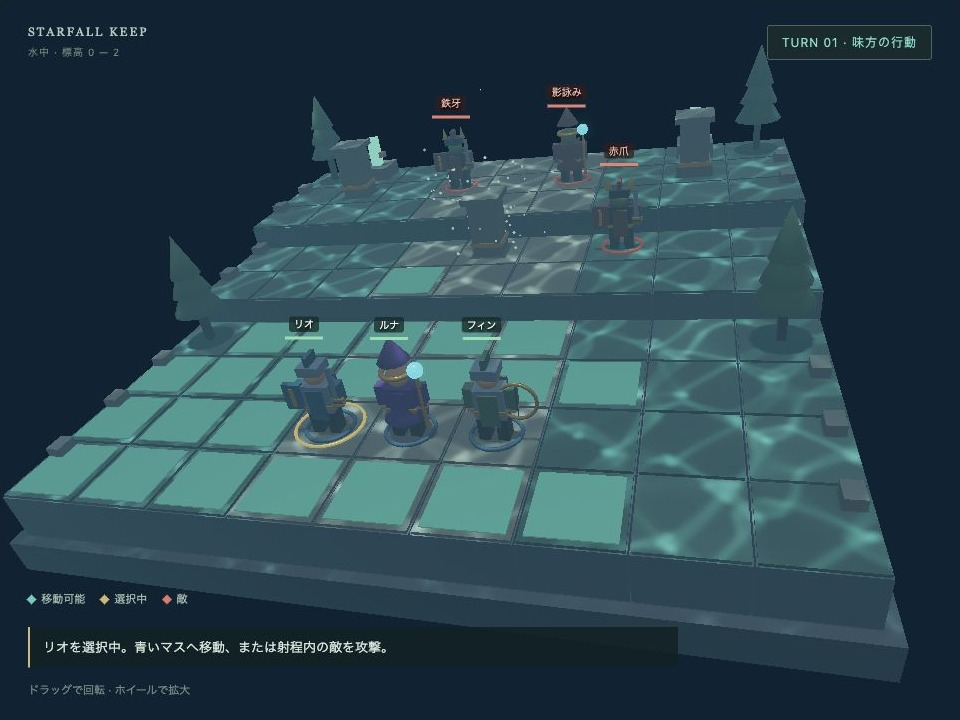

fantasy — 翠の砦
English | 日本語

概要
高低差のある9×9マップで、剣士・魔術師・弓使いの3人を動かして敵3体を倒すターン制ゲームです。PBR（物理ベースレンダリング）のシーンに、動くNode、クリック選択、DOMの操作パネル、GPU粒子、勝敗と再開始を足す小さな統合例です。
外部モデルや音声ファイルは不要です。形状はPrimitiveで生成し、手足と装備をNodeの親子構造で接続します。戦闘ルールはGPUとDOMから独立しており、マスの経路と表示アニメーションを段階的に追えます。
戦場は水に沈んだ砦です。地形・装飾・部隊へコアのコースティクスを適用し、青緑の照明、距離フォグ、上へ漂う粒子で水中を表現します。「水中のコースティクス」を切り替えると、地面を流れる集光を比較できます。OFFでも水中の色とフォグは残ります。
実行と操作
WebGPU対応ブラウザでfantasy.htmlを開きます。リポジトリ全体をHTTPで配信し、localhostまたはHTTPSを使ってください。初回はPBRとGPU粒子を準備します。
- 3Dの味方、または部隊一覧から操作するユニットを選びます。
- 青いマスをクリックして移動します。
- 射程内の敵をクリックして攻撃します。
- 他の味方を操作し、最後に「味方ターンを終了」で敵の行動へ進みます。
各ユニットは移動1回・攻撃1回です。攻撃だけの行動も可能です。移動は攻撃前に行い、攻撃後は「待機」で行動を終了します。「待機」で個別に行動を終了します。敵は移動して射程に入り、攻撃可能な味方のうちHPが低い相手を狙います。
移動は上下左右、段差は1段までです。上りは移動力2、平地・下りは1を消費します。生存ユニットと障害物は通り抜けられません。高所からの攻撃はダメージ+3。射程はマス距離で、遠隔攻撃は障害物を越えます。命中は確定です。
全敵撃破で勝利、味方全滅で敗北。「最初から」「もう一度戦う」で再開始します。「マスをボタンで操作」を開くと、TabとEnterでも同じ選択・移動・攻撃を行えます。
ドラッグで視点を回し、ホイールで拡大します。初期視点は斜めから見下ろす透視投影です。大きい画面ではCanvasを960×720とし、狭い画面では幅に合わせ、操作パネルを下へ配置します。
使用しているwebgの機能
WebgSceneApp: SceneDefinitionと同じ構造のmanifest objectから、PBRとGPU粒子をまとめて起動します。ゲームの更新はonUpdate({ deltaSec })へ置きます。Shape・Primitive・Node: 胴体、関節、装備を作ります。親の移動に子部品が追従し、四肢の差分回転で歩行を表します。- PBR材質・環境光・影・Bloom・Fog: 草と石は粗く、鎧と金の装備は金属度を高くします。環境光は
blue-sky、鉛直方向光は淡い青色です。 WaterBody・PbrRenderer.setWater(): 水面の波から照度を作り、地形と動く部隊の直接拡散光へ投影します。水面の屈折表示はOFFとし、操作するマスを読みやすく保ちます。Space.raycast(): 画面座標をReverse-Z対応のレイへ変え、地形またはキャラクターを選択します。判定はAABBです。ComputeParticleEmitter: 足元、魔法、火花、漂う光を別装置で発生させます。標準入口が更新とPBRへの合成を行います。
physics:falseにして、経路探索と高低差を作品側のマス規則で扱います。剛体物理、外部モデルのスキニング、clip再生は使いません。
確認ポイント
- リオを選び、補助盤の「列4 行5 高さ1」へ移動すると、上りのコストを含む4の移動力を使い、標高0から1へ歩きます。
- 移動中は手足と上下動、到着した足元の粒子を確認します。行動中のボタンは無効になり、表示が終わってからマスを確定します。
- フィンは射程4、ルナは射程3です。射程外のクリックではHPを変えず、説明を表示します。
- 攻撃の軌跡、着弾粒子、被弾の揺れ、HP減少、戦闘不能の表示を確認します。
- 敵ターンの高所攻撃にはログで「高所 +3」が付きます。次の味方ターンには行動権が戻ります。
- 再開始でHP、配置、ターン、ログ、粒子が戻ります。GPU資源は再利用します。
- カメラ回転と画面の幅変更後も、頭上ラベルとクリック位置が3D表示に合うことを確認します。
- 集光が地形とユニットの移動に追従し、ON/OFF後も移動・攻撃・ターン進行を続けられることを確認します。
コードを読む順序
main.jsのstart(): 一つの入口からシーンを起動し、動くNodeと入力を追加してからstart()します。描画ループや粒子のstepを別に作りません。scene.jsのcreateManifest(): 配置・共通材質・PBR・粒子を初期データとして読みます。地形のマスと描画高度はrules.mjsから生成します。visuals.jsのpart()とcharacter(): 直接Shapeへ指定するRGBAとPBR材質、Nodeの親子関係、手動Shapeの所有者を確認します。main.jsのchoose()→move()→updateMotion(): マスを選び、表示を待ち、論理座標を確定する順序を追います。rules.mjsのpaths()は上りのコストを含む経路探索です。main.jsのmakePointerRay()・pickTile()・updateLabels(): 3Dの選択とDOMの表示へ同じカメラを使う箇所を読みます。FantasyApp.jsと終了処理: CSS寸法、Canvas、PBRの描画先を同期し、Observer・手動Shape・標準入口をそれぞれ解放します。
main.jsのreset()はこのゲームの再開始で、コアのWebgSceneApp.reset()とは別の関数です。HPや行動権の復元はゲーム側の責任です。
水中の照明を接続する
main.jsのconnectWater()で、全体を覆う幅・奥行き18m、平均水面高さ6mのWaterBodyを作ります。地形と部隊の親NodeをaddReceiver()へ渡すと、手足・装備を含む子Shapeへ登録が引き継がれます。移動マーカーと選択リングは対象から外します。描画ループのupdate()ではsetTime()で秒単位の時刻だけを更新します。
await sceneApp.renderer.setWater(water, {
causticsEnabled: true,
surfaceEnabled: false,
quality: "high"
});
ON/OFF時はsceneApp.stop()で新しいframeを止め、setWater()の準備を待ってから再開します。OFFで専用GPU資源を解放し、再ONでも戦闘状態と登録済みNodeを引き継ぎます。再開始では水域を再利用します。
これは水中の雰囲気を作る照明演出です。RGB吸収の設定は集光の減衰に使い、カメラまでの濁りは標準Fogで近似します。水中カメラの屈折・全反射・水面の裏側は描画しません。任意物体への集光は水平照度画像の投影近似で、影とPBRの鏡面反射は標準パイプラインが処理します。詳細はwaterの使い方を参照してください。
一つずつ変更して学ぶ
- 鎧の粗さを変える:
visuals.jsのpalette.steel.roughnessを0.28から0.65へ変えます。カメラを回してハイライトの広がりを比較します。地形の共通材質はscene.js側です。 - 移動力を変える:
rules.mjsのリオのmoveを4から3へ変えます。最初の「列4 行5」へ届かなくなることを確認します。経路と青い表示は同じ結果から更新されます。 - 歩行をゆっくりにする:
main.jsのmove()にある区間のdurationを増やします。HPや射程を変えず、移動中の入力停止と到着時のマス確定を確認します。 - 粒子を変える:
scene.jsのsteps.appearance.colorsの二つのRGB色を変えます。main.jsの発生位置やゲームの経路はそのまま使えます。
一つ変更するごとに上の確認ポイントを試します。材質、ルール、表示速度、効果を同時に変えない方が、結果の原因を判断しやすくなります。
文書と自動確認
fantasy_design.mdはゲームの設計と機能の範囲です。camera_reference.jsonには初期視点の参照値を保存しています。bookの「PBRシーンから小さなゲームへ」と併せると、単機能の例からこの構成へ進む境界を確認できます。
リポジトリのルートから次を実行すると、GPUを使わず地形・経路・占有・射程・敵の計画・勝敗を確認できます。描画と操作はブラウザで別に確認します。
node --test samples/fantasy/rules.test.mjs